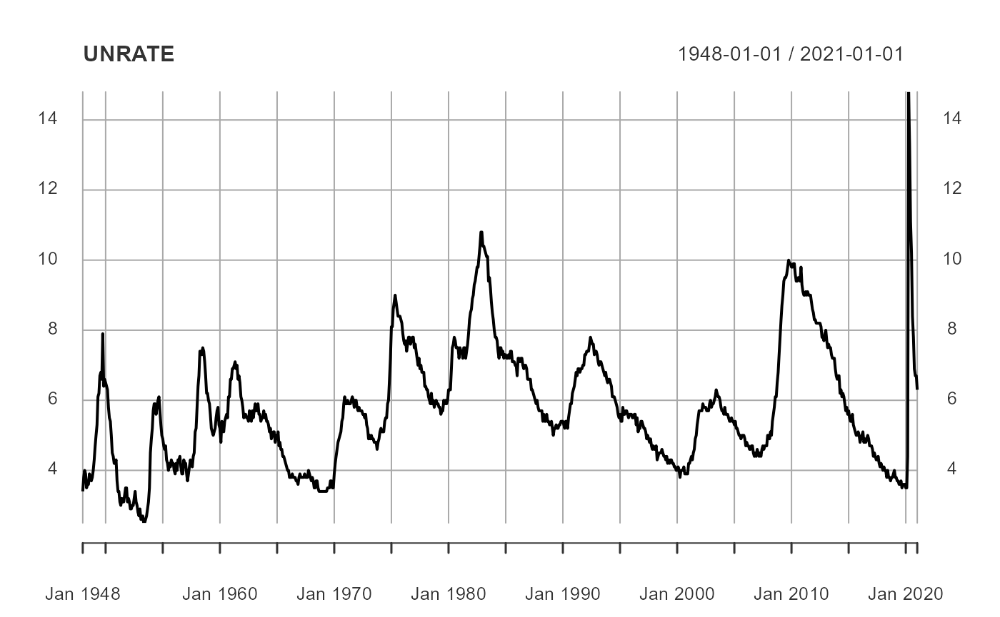
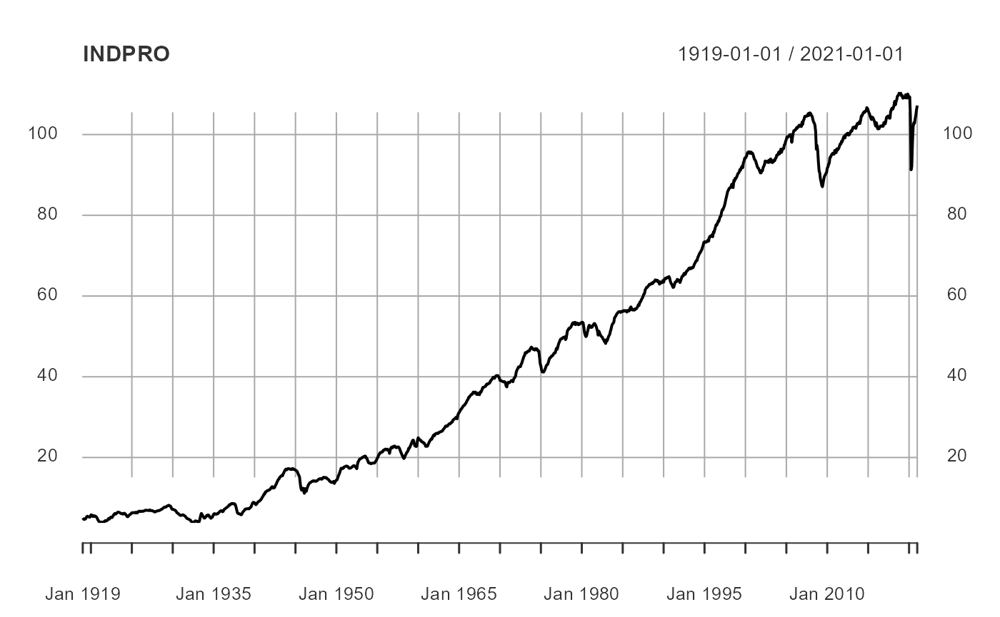
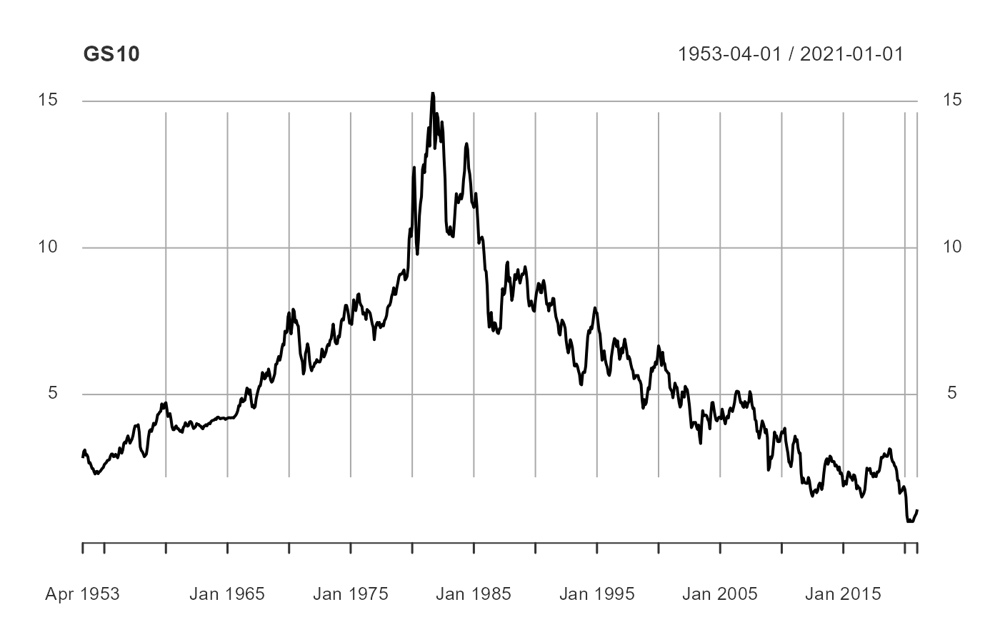

1_data.Rmd← Introduction Forecast Analysis →
In this simple vignette, we will get started with a simple forecasting example of interest to many people, the unemployment rate of the United States. We will proceed by 1) downloading economic data from FRED, 2) creating a collection of univariate and multivariate forecasts, 3) combining all our forecasts to create new, and hopefully more accurate, forecasts, 4) evaluate our forecast errors and, 5) visualize our most promising forecasts.
Disclaimer: this writing is meant to be a simple example highlighting the workflow of the OOS package. That being said, the US macroeconomy is an erdogic system, a fact that is ignored for this analysis. As a result, there are several important steps to the time series analysis ignored and this should not be taken as advice on how to forecast the US unemployment rate for any type of actionable decision making.
For the purposes of this vignette, we will load the general purpose tidyverse for data cleaning and the OOS package for forecasting. However, note that OOS does not require tidyverse be loaded globally, this is purely for the ease of exposition.
# load packages
suppressPackageStartupMessages(library(tidyverse))
suppressPackageStartupMessages(library(lubridate))
library(OOS)As we are are seeking to forecast the unemployment rate, we will obviously need to beging by acquiring the time series data. Moreover, as we will be taking advantage of multivariate techniques, we will also look towards aquiring related economic time series, namely industrial production (as a monthly proxy for output), and the 10-year constant maturity Treasury yield (as a proxy for interest rates).
For our data we will turn to FRED (a repository of global economic data, currated by the Federal Reserve Bank of St. Louis).
# pull data
quantmod::getSymbols.FRED(
c('UNRATE','INDPRO','GS10'),
env = globalenv())## Registered S3 method overwritten by 'quantmod':
## method from
## as.zoo.data.frame zoo## [1] "UNRATE" "INDPRO" "GS10"
# format data
Data = cbind(UNRATE, INDPRO, GS10)
Data = data.frame(Data, date = zoo::index(Data))One will note that once we downloaded the data from FRED, we additionally combined all of the series into a data.frame with a column named date. We do this because OOS forecasting routines can accept two general data formats:
ts, xts, or zoo objectsAs the data.frame option is non-standard, it is what we demonstrate in this vignette.
Having downloaded our time series, we next inspect our new data.
# basic plot of the unemployment time series
plot(UNRATE)
# basic plot of the industrial production time series
plot(INDPRO)
# basic plot of the 10-year Treasury yield time series
plot(GS10)
Upon inspection it becomes clear that industrial production and the 10-year Treasury yield are trending series (i.e. they are non-stationary). And yes, there are formal tests we could conduct to test this hypothesis, as well as with the unemployment rate, but for the purposes of this example we will take their trends, or lack thereof, as given. We will transform the industrial production to a year-over-year percent growth rate and the 10-year Treasury yield to a month-over-month percentage point change.
# make industrial production and 10-year Treasury stationary
Data = Data %>%
mutate(GS10 = GS10 - dplyr::lag(GS10),
INDPRO = (INDPRO - lag(INDPRO, 12))/lag(INDPRO, 12))
# start data when all three variables are available
# (this is not necessary, but it will suppress warnings for us)
Data = filter(Data, date >= as.Date('1954-01-01'))Now that we have our data, we can forecast.